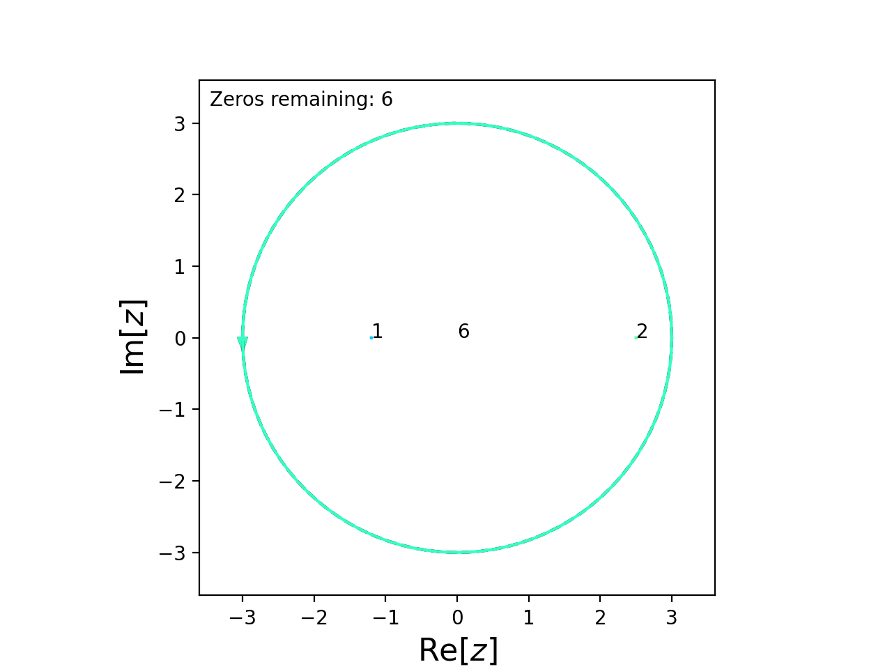
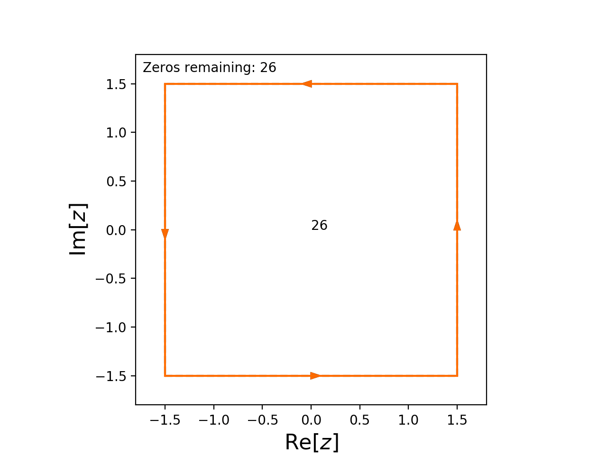

Using Known Roots or Symmetries¶
Guessing Roots¶
The guessRoots argument of Contour.roots can be used to supply any roots the user already knows or suspects.
For example, suppose we want to find the roots of the function
It’s obvious that 2.5 and -1.2 are roots so we can tell cxroots this by passing guessRoots=[2.5, -1.2] to C.roots().
from numpy import exp, sin, cos
from cxroots import Circle
C = Circle(0, 3)
f = lambda z: (exp(-z)*sin(z/2)-1.2*cos(z))*(z+1.2)*(z-2.5)**2
C.roots(f, guessRoots=[2.5, -1.2])
This causes cxroots to first check for roots within small circles centered on the points 2.5 and -1.2
{kind=link}
Note that the list we supply to guessRoots simply tells cxroots where to look first for roots, the guesses will not be blindly accepted so they do not need to be particularly accurate.
Guessing Root Symmetry¶
It may be that something is known about the structure of the roots. cxroots can be told this using the guessRootSymmetry argument which should be a function of a complex number, \(z\), which returns a list of roots assuming that \(z\) is a root.
For example, if \(z_i\) is a root of
then so is \(\overline{z_i}\) and \(-z_i\).
We should therefore pass guessRootSymmetry=lambda z: [z.conjugate(), -z] to C.roots()
from cxroots import Rectangle
C = Rectangle([-1.5,1.5], [-1.5,1.5])
f = lambda z: z**26-2*z**10+0.5*z**6-1
df = lambda z: 26*z**25-20*z**9+3*z**5
C.roots(f, df, guessRootSymmetry=lambda z: [z.conjugate(), -z])
This causes cxroots to check for roots within a small circle centered on the points \(\overline{z_i}\) and \(-z_i\) whenever a root, \(z_i\), is found.
{kind=link}